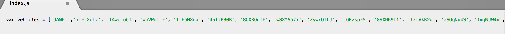
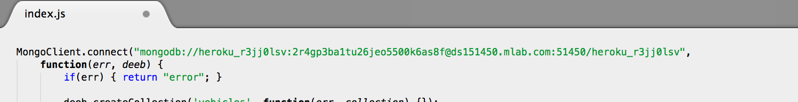
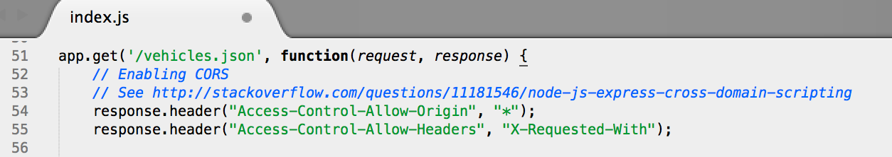
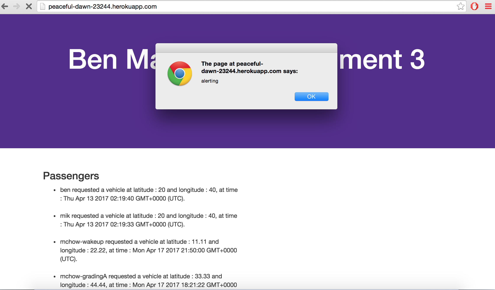

This application NotUber performs 3 HTTP methods: 2 GETs and 1 POST. This application can return a list of Passengers on the homepage, return the data of a specified vehicle, and it can accept the username, latitude, and longitude of passenger or vehicle. My job is to find the vulnerabilities and security flaws of this web app.
I was able to find the security vulnerabilities through submitting to the POST method using curl and by looking at the Javascript source code for the application.
I found 3 individual sites of potential security attacks within this web application. These issues can all lead to the leaking of private information and data and to corruption of the data and the database. There is a place of the potential leaking of database authentication information, the leaking or manipulation information within the database, and a place where Cross Site Scripting--which can also lead to the leaking and manipulation of data--is possible.
The first issue found with the security of the code was the hardcoded values. The code hardcodes the MongoDB authentication information and hardcodes the list of vehicle username values.
I found the issue within the index.js file. The vehicles list is at the top of the file at the var declarations and the hardcoded authentication information is found when Mongo Client is connected to the database.
I believe that this is a high risk issue because with the exposed database authentication information a hacker could easily enter the database themselves and manipulate, steal, or delete the data from the database.
A possible solution to this issue could be to save the authentication information and data list in a variable not set in this file, therefore not leaving the information and data exposed anymore.
 A second issue found was the "Access-Control-Allow-Origin" HTTP response header is set to "*".
The issue is within the index.js file where the HTTP response header is set to allow for Cross Origin References. This setting allows any domain access to this application.
I believe this issue to be high risk. Because the "Access-Control-Allow-Origin" is set to basically let anything access it, data can be leaked from the applicaton. Malicious sites or hackers could potentially spam the database with bad data--leading to an overflow of the database server, thus leaving the server vulnerable.
A potential solution to this is to use the full features of the CORS specifications to accurately carry out the needed security measures for the application.
A third issue found was a vulnerability to cross site scripting.
This issue is found within the HTTP POST method written in the index.js file. A hacker can insert a script within the username field they submit to post, changing the program.
I believe this to be a high risk security issue. Because the submitted username value is not parsed and just read in directly, hackers are able to directly insert their own script into the coders running application. This is a big security risk because the hacker could insert anything and make the program run in anyway with this XSS vulnerability. They could extract data, add in faulty data, have the page redirect to a malicious site, etc.
A possible solution would be to parse through and sanitize the values the client submits through the HTTP POST method before storing it as data. If a malicious script, or any script at all, is found in the submitted value, the POST request should be discarded.
For future applications the security of the data and database should be considered. In order to protect and not expose private data to the public precautions must be made by ensuring that nothing can access the database but its own script, no false data can be injected into the database, no database request injections to manipulate the data is possible, and no cross site scripting is possible. Everywhere that values are taken from a client's input must be sanitized and confirmed before accepting and storing it. Taking these precautionary steps may lead to the application taking more time to process--but it should be worth it to protect the data from being corrupted and application from being compromised.
I used the class notes and security examples provided for the class by Ming to aid in finding the security flaws and complete this assignment